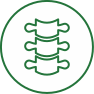

Позвоночник
-
Классический и тайский массаж
-
Массаж является одним из основных способов оздоровления организма, который широко используется в
медицине
и косметологии. Массаж оказывает комплексное воздействие на организм и помогает укрепить иммунную
систему, улучшить обмен веществ, усилить крово- и лимфообращение, скорректировать фигуру.
-
Лечение у остеопата
- Остеопат воздействует руками на опорно-двигательный аппарат,
внутренние органы и центральную нервную систему для профилактики, диагностики и лечения. Это позволяет
устранить механические дисфункции и включить механизм саморегуляции организма и активации его внутренних
ресурсов. Мягкими движениями рук врач-остеопат восстанавливает обмен веществ в проблемной зоне, улучшает
кровоснабжение внутренних органов, устраняет защемления нервных окончаний, исправляет положение
внутренних органов и мышц, возвращает подвижность в суставах.
-
Внутритканевая электростимуляция
- Метод лечения, основанный на воздействии электрического тока на
нервные рецепторы. Параметры тока (сила, напряжение и частота) приближены к биотокам самого организма.
Применяется для лечения остеохондроза, грыж межпозвоночных дисков, сколиоза, остеоартроза и других
заболеваний позвоночника и суставов. Демонстрирует хорошие результаты в борьбе с вегето-сосудистой
дистонией, язвенной болезнью, бронхиальной астмой, мигренями и головными болями. Курс процедур устраняет
симптоматику заболевания и его причину, восстанавливая периферическую нервную систему. В результате
сокращаются сроки лечения и значительно увеличивается срок ремиссии.
-
Кинезиотренинг
-
Методика лечения через движение, в основе которой лежит холистический (комплексный) подход – все в теле
взаимосвязано и взаимозависимо. Диагностика нарушений происходит через выявление слабого звена мышечной
системы. Это тестирование определяет не только физиологические нарушения, но и уточняет эмоциональные
травмы, которые привели к мышечным блокам, зажимам. Ведь давно известно, что глубокое переживание
стресса способно фиксироваться на уровне тела.
-
Плазмотерапия
- Метод лечения, основанный на введении богатой тромбоцитами плазмы,
полученной из крови самого пациента. Активизирует полноценное восстановление тканей организма без
применения медикаментозных средств. Частными эффектами метода являются: усиление процессов регенерации
на клеточном уровне, стимуляция образования клеток соединительной (фибробластов), костной (остеобластов)
и хрящевой тканей (хондроцитов), усиление синтеза собственного коллагена и новых кровеносных сосудов в
мягких тканях, улучшение кровообращения, кислородного обмена и, как следствие, трофики тканей.
-
Спектральная фототерапия (СФТ) – Лечение остеохондроза
-
Метод доставки необходимых микроэлементов к пораженному органу с помощью мультиспектральной энергии
света. Сочетает принципы фототерапии и рефлексотерапии. Обеспечивает адресную доставку микроэлементов
через биологически активные точки к органам и системам организма. Лечебный эффект достигается за счет
насыщения организма определенными микро- и макроэлементами, которые участвуют во всех обменных
процессах,
обеспечивая нормальное функционирование организма. Используется для восстановления работы всех органов и
систем.
-
Консультация врача-невролога
-
Врачи-неврологи занимаются диагностикой, профилактикой и лечением широкого перечня заболеваний
центральной и периферической нервной системы, проводят терапию некоторых патологий опорно-двигательного
аппарата. Большая часть обращений к этим специалистам связана с такими патологиями, как неврит,
остеохондроз и радикулит.
-
Диагностическая плантография
- На консультации травматолог-ортопед проводит диагностическую
плантографию на специальном аппарате-сканере для получения 2D-изображения стопы. Благодаря этому можно
выявить все особенности стопы и создать индивидуальную стельку. Использование таких стелек позволяет
достичь более правильной механики стопы, предупреждает деформацию стопы при нагрузках, разгружает
проблемные зоны на стопе, уменьшает боли в стопе.
-
Программа «Общее оздоровление»
-
Это комплекс лечебно-профилактических мероприятий, направленных на укрепление иммунитета, восстановление
природных сил и улучшение работы основных регуляторных систем организма. Последовательное и
взаимосвязанное выполнение процедур, включенных в программу, гармонизирует физиологический баланс,
улучшает общее состояние пациента, повышает жизненный тонус и устойчивость к негативному влиянию внешних
факторов.